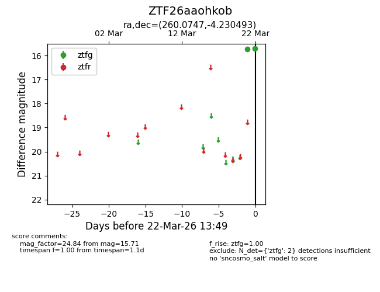
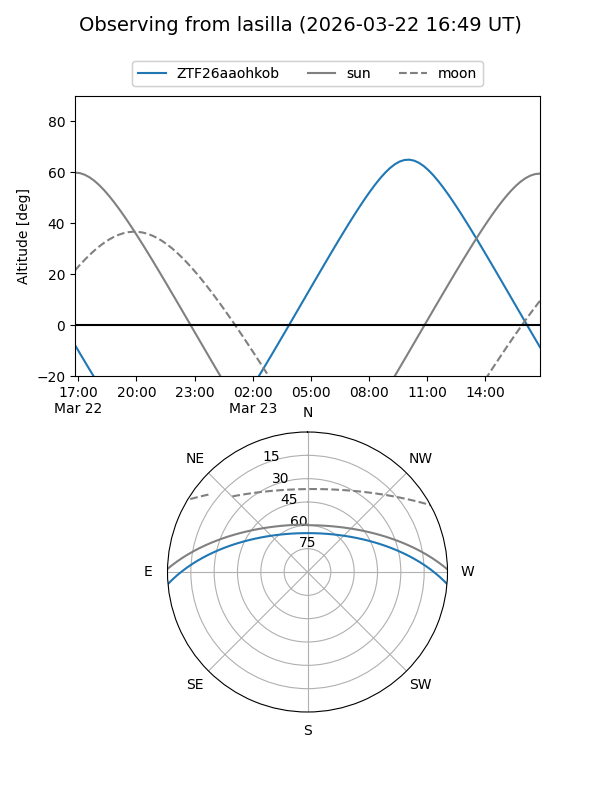
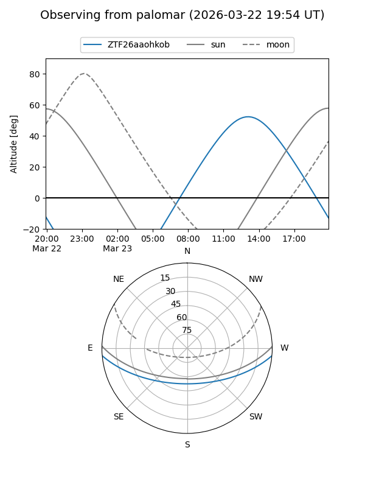

ZTF26aaohkob
Target ZTF26aaohkob at 2026-03-22 13:51
Aliases and brokers:
FINK: link
Lasair: link
ALeRCE: link
alt names
ZTF26aaohkob (ztf,fink_ztf)
Coordinates:
equatorial (ra, dec) = 260.0747,-4.23049
equatorial (HMS+DMS) = 17:20:17.93,-04:13:49.78
galactic (l, b) = (18.2000,+18.06464)
Flags:
Photometry:
last ztfg=15.71
2 ztfg detections
Lightcurve

Visibility


Additional plots